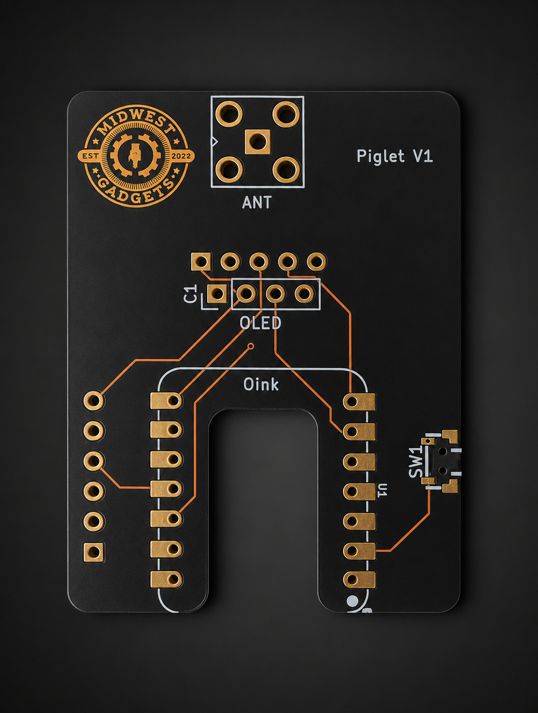

Wardriver · Open Source · ESP32
Wi-Fi & GPS wardriving platform. Scan, log, and upload WiGLE-compatible data — all from a pocket-sized ESP32 device.
2.4 & 5 GHz scanning · SD logging · Web UI · ESP-Now Mesh · OLED display
Main wardriving firmware for Seeed XIAO boards. XIAO boards use native USB (no UART bridge) — you must enter bootloader mode before flashing.
⚠ Enter bootloader mode first:
BOOT buttonRESET (or re-plug USB)BOOT
Still not working? Unplug USB, hold BOOT,
plug USB back in, release BOOT. The device should now show
as a new serial port in the browser dialog.
Standalone mesh node firmware for XIAO ESP32-C5. No display, GPS, or SD card required — boots directly into ESP-Now node mode and auto-pairs with any Piglet Core.
⚠ Enter bootloader mode first: Hold BOOT → tap
RESET → release BOOT, then click Flash.
Standalone variant for the LilyGo T-Dongle C5 with built-in ST7735 TFT display, APA102 LED, and TF card slot. Self-contained single-file firmware — no external OLED required.
⚠ Enter bootloader mode first: Hold BOOT → tap
RESET → release BOOT, then click Flash.